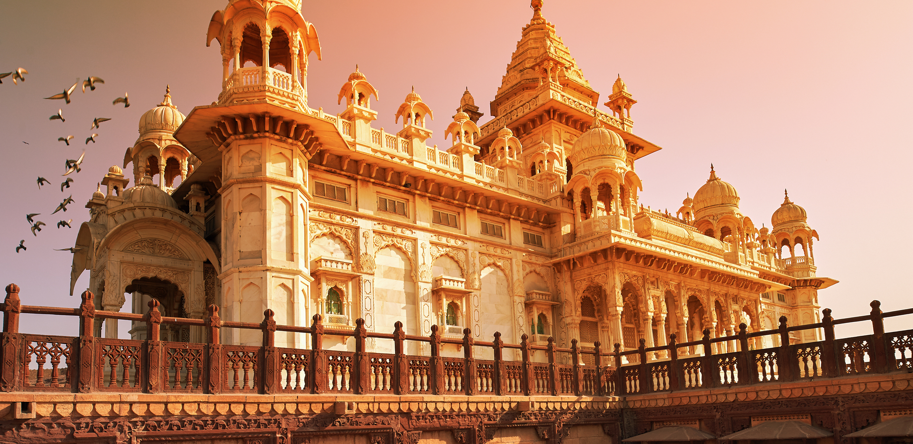

Rajasthan
Historical & Architectural Gems
Rajasthan offers a rich blend of history, culture, and architecture,
with top destinations including the "Pink City" of Jaipur (Amer Fort,
Hawa Mahal), the "City of Lakes" Udaipur (Lake Pichola), the "Blue
City" Jodhpur (Mehrangarh Fort), and the desert city of Jaisalmer
(Jaisalmer Fort, Sam Sand Dunes). The architecture of the Indian state
of Rajasthan has usually been a regional variant of the style of
Indian architecture prevailing in north India at the time. Rajasthan
is especially notable for the forts and palaces of the many Rajput
rulers, which are popular tourist attractions.
Most of the population of Rajasthan is Hindu, and there has
historically been a considerable Jain minority; this mixture is
reflected in the many temples of the region. Māru-Gurjara
architecture, or "Solaṅkī style" is a distinctive style that began in
Rajasthan and neighbouring Gujarat around the 11th century, and has
been revived and taken to other parts of India and the world by both
Hindus and Jains. This represents the main contribution of the region
to Hindu temple architecture. The Dilwara Jain Temples of Mount Abu
built between the 11th and 13th centuries CE are the best-known
examples of this style.
JAIPUR
Jaipur is the capital and the largest city of the north-western Indian
state of Rajasthan. As of 2011, the city had a population of 3.1
million, making it the tenth most populous city in the country.
Located 268 km (167 miles) from the national capital New Delhi, Jaipur
is also known as the Pink City due to the dominant colour scheme of
its buildings in the old city.
Jaipur was founded in 1727 by Sawai Jai Singh II, the Kachhwaha Rajput
ruler of Amer, after whom the city is named.It is one of the earliest
planned cities of modern India, designed by Vidyadhar
Bhattacharya.During the British colonial period, the city served as
the capital of Jaipur State. After Indian independence in 1947, Jaipur
became the capital of the newly formed state of Rajasthan in 1949.
UDAIPUR
Udaipur is a city in the north-western Indian state of Rajasthan,
about 415 km (258 mi) south of the state capital Jaipur.It serves as
the administrative headquarters of Udaipur district. It is the
historic capital of the kingdom of Mewar in the former Rajputana
Agency. It was founded in 1559 by Udai Singh II of the Sisodia clan of
Rajputs, when he shifted his capital from the city of Chittorgarh to
Udaipur after Chittorgarh was besieged by Akbar. It remained as the
capital city till 1818 when Mewar became a British princely state, and
thereafter the Mewar province became a part of Rajasthan when India
gained independence in 1947.It is also known as the City of Lakes, as
it is surrounded by five major artificial lakes.
The city is
located in the southernmost part of Rajasthan, near the Gujarat
border. To its west is the Aravali Range, which separates it from the
Thar Desert. It is placed close to the median point between two major
Indian metro cities, around 660 km from Delhi and 800 km from Mumbai.
Besides, connectivity with Gujarat ports gives Udaipur a strategic
geographical advantage.Udaipur is well connected with nearby cities
and states by means of road, rail and air transportation facilities.
The city is served by the Maharana Pratap Airport. Common languages
spoken include Hindi, English and Rajasthani (Mewari).
JODHPUR
Jodhpur is the second-largest city of the north-western Indian state
of Rajasthan, after its capital Jaipur. As of 2025, the city has a
population of 1.6 million.It serves as the administrative headquarters
of the Jodhpur district and Jodhpur division. It is the historic
capital of the Kingdom of Marwar, founded in 1459 by Rao Jodha, a
Rajput chief of the Rathore clan. On 11 August 1947, 4 days prior to
the Indian independence, Maharaja Hanwant Singh the last ruler of
Jodhpur state signed the Instrument of Accession and merged his state
in Union of India.On 30 March 1949, it became part of the newly formed
state of Rajasthan, which was created after merging the states of the
erstwhile Rajputana.
Jodhpur is a famous tourist spot with a
palace, fort, and temples, set in the stark landscape of the Thar
Desert. It is also known as the 'Blue City' due to the dominant color
scheme of its buildings in the old town.The old city circles the
Mehrangarh Fort and is bounded by a wall with several gates. Jodhpur
lies near the geographic centre of the Rajasthan state, which makes it
a convenient base for travel in a region much frequented by tourists
JAISALMER
Jaisalmer, nicknamed The Golden City, is a city in the north-western
Indian state of Rajasthan, located 575 kilometres (357 mi) west of the
state capital Jaipur, in the heart of the Thar Desert.It serves as the
administrative headquarters of Jaisalmer district. Jaisalmer is a
former medieval trading center and the historic capital of the kingdom
of Jaisalmer, founded in 1156 by Rawal Jaisal of the Bhati clan of
Rajputs.Jaisalmer stands on a ridge of yellowish sandstone and is
crowned by the World Heritage Site, Jaisalmer Fort, a sprawling
hilltop citadel supported by 99 bastions.This fort contains a royal
palace and several ornate Jain temples. Many of the houses and temples
of both the fort and of the town below are built of finely sculptured
yellow sandstone. The town has a population, including the residents
of the fort, of about 78,000. Jaisalmer ranked 9th on Booking.com's
Top 10 The Most Welcoming cities in the world. It is the only Indian
city on the list.
The state of Jaisalmer had its foundations in
what remains of the Empire ruled by the Bhati dynasty. Early Bhati
rulers ruled over large empire stretching from Ghazni in modern-day
Afghanistan to Sialkot, Lahore and Rawalpindi in modern-day Pakistan
to Bhatinda, Muktsar and Hanumangarh in modern-day India.The empire
crumbled over time because of continuous invasions from Central Asia